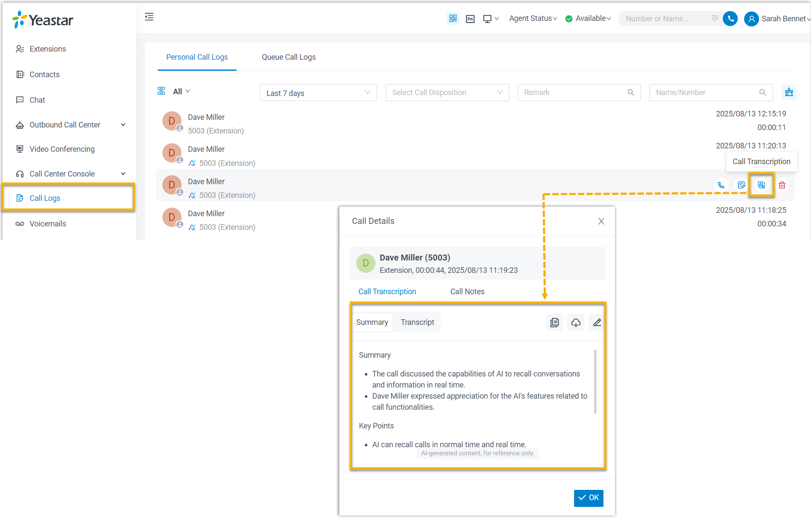

Transcribe a Call
AI-powered Call Transcription feature supports transcribing a call between two parties into readable texts in real-time, and generate a summary after the call ends, helping you quickly summarize key points and identify to-dos.
Requirement
- PBX Server
-
- The firmware of the PBX server is 83.20.0.x or later.
-
The system administrator has enabled Call Transcription (Path: ) for your extension.
-
There is remaining time available for the AI Transcription feature.
- Linkus Desktop Client
- The version of your Linkus Desktop Client meets the following
requirements:
- Windows: 1.14.x or later
- Mac: 1.14.x or later
Procedure
- During an active call, click AI Transcription on the
call window.
After clicking, the AI transcription panel on the right side of the call window will be opened.
- Transcribe the call according to your need:
- Turn on AI
Transcription.
Once enabled, the extension will enable real-time transcription to record the conversation content between both parties.
Note: If Automatic Call Transcription is enabled, the transcription feature will start automatically whenever the extension joins a one on one call. For more information about how to enable Automatic Call Transcription, see Configure AI Call Transcription. - In the language drop down list, select the target language
for transcription as needed.Note:
- When two parties are in a call, if only one has AI Transcription enabled, the call will be transcribed in the language configured by this one.
- If both parties have AI Transcription enabled during a call, the language configured by the caller will be used. Otherwise, the first to enable AI Transcription decide the transcription language. Only the user whose language is selected can change it, the other party’s language option is hidden.
Tip: In the search bar besides the language drop-down list, you can search for the transcribed content you want. Content that meets the search string will be highlighted. - Turn on AI
Transcription.
Result
- During the call, the call audio will be transcribed in the right panel of the call window in real time.
-
After the call ends, you can review the summary and transcript in the call log; Calls that have been transcribed are marked with a
 icon.Note: You can edit the call summary, or search transcript according to your need.
icon.Note: You can edit the call summary, or search transcript according to your need.